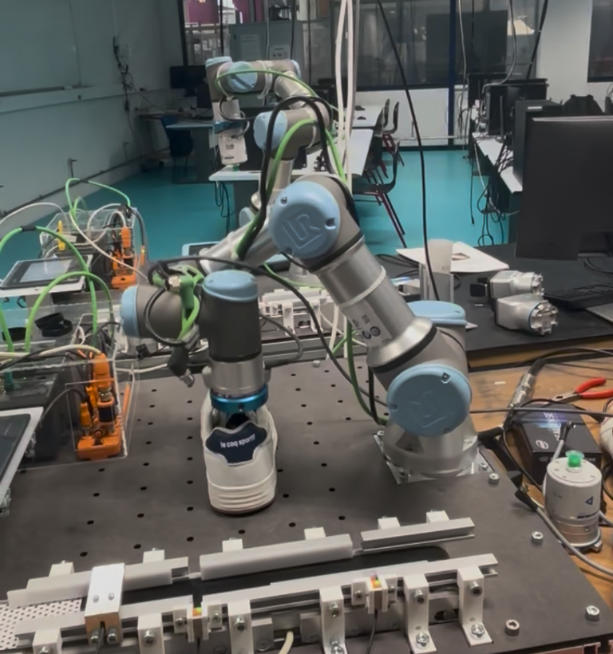
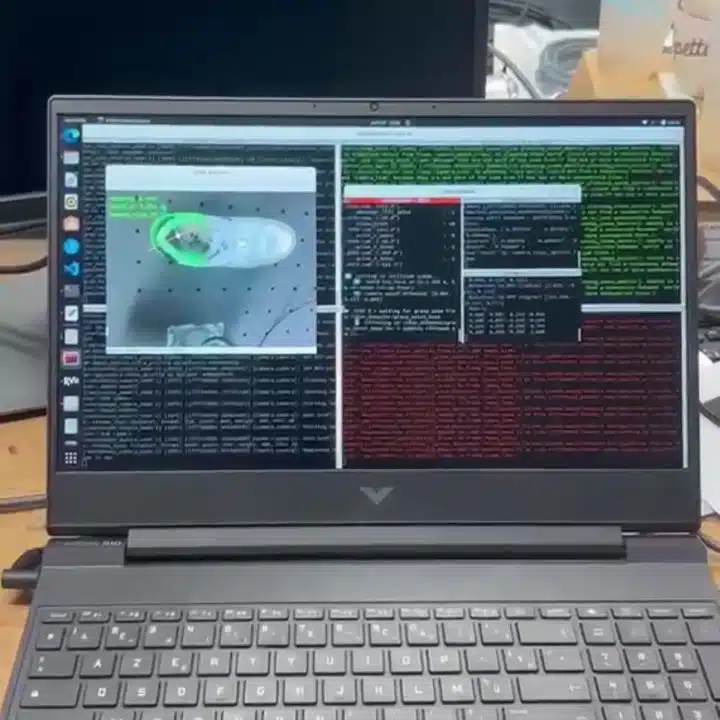

PROJET ÉTUDIANT / 2e ANNÉE
Cellule de tri
avec cobot UR3e
Développement en équipe d’une application de bin-picking pour le tri de chaussures. Ma contribution porte sur l’automatisation du cobot et la génération de trajectoires jusqu’au point de préhension.

01 / Le contexte
Automatiser le tri de chaussures
Réalisé en deuxième année d’école d’ingénieur au sein d’une équipe de six personnes, ce projet avait pour objectif global de développer une application de bin-picking dédiée au tri de chaussures. Le système combine la perception de l’objet et l’intervention d’un cobot UR3e afin de rejoindre la chaussure et de la saisir.
02 / Mon rôle
De la cible à la trajectoire du robot
Je me suis occupé de la partie automatisation et génération de trajectoires. Avec ROS 2 et MoveIt, j’ai travaillé sur la planification du mouvement du bras pour rejoindre la cible de préhension. La résolution de la cinématique inverse (IK) permet de calculer les positions articulaires correspondant à la pose visée par l’effecteur.
J’ai également travaillé sur le grasp planning : définir une pose et une approche adaptées pour que le robot puisse atteindre la chaussure avec précision. Ces étapes relient la cible issue de la perception au mouvement autonome du cobot.
03 / Démonstration
Perception et mouvement autonome
La démonstration montre d’abord le retour de la caméra embarquée sur l’effecteur : la détection YOLO et la segmentation du contour de la chaussure permettent d’identifier le point de saisie. Le cobot UR3e se déplace ensuite de façon autonome et fluide jusqu’à la cible pour attraper la chaussure.
